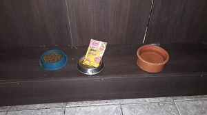
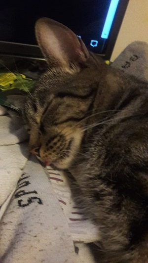
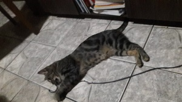

Meus potes de comida

Gosto muito de ir até os meus potes de comida e ver que estão sempre cheios.
O meu tutor só compra ração Golden e sache Whiskas pra mim. Recomendo muito!!!
Lembrando que nós gatos somos muitos exigentes, gostamos de tomar sempre água fresca e limpa
Amo Dormir!!!

Nós gatos amamos dormir e comigo não poderia ser diferente. Dormimos até 14 horas por dia.
Eu costumo dormir na cadeira da sala, ao lado do meu tutor enquanto ele tambem dorme e adoro dormir em frente ao monitor do computador dele, enquanto ele fica digitando algo.
Vocês humanos seriam mais felizes se dormissem mais, acessem esse site e vejam como é bom ter nossa companhia na cama.
Adoro Brincar

Nós gatos amamos brincar e por incrivel que pareça, não somos muito exigentes, pode ser um simples cordão ou até mesmo uma pedra, lembrando que uma caixa é muito mais legal que um brinquedo tecnológico.
Adoro brincar de perseguir coisas, pois isso ativa os meus instintos selvagens de caça. O meu tutor para me deixar feliz, trouxe um pedaço enorme de galho de árvore para eu subir, escalar e brincar, serve como ponte da minha casinha até o computador dele.
Tem diversos sites ensinando a fazer brinquedos para gatos, recomendo muito esse site, pois ele dá varias dicas de como nos entreter.